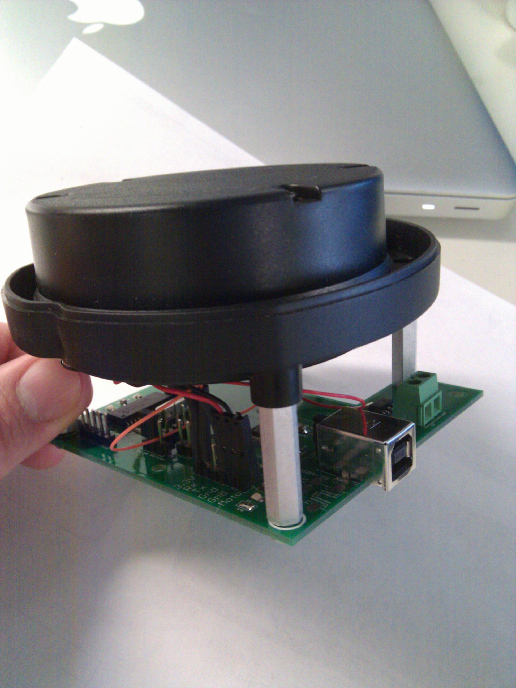
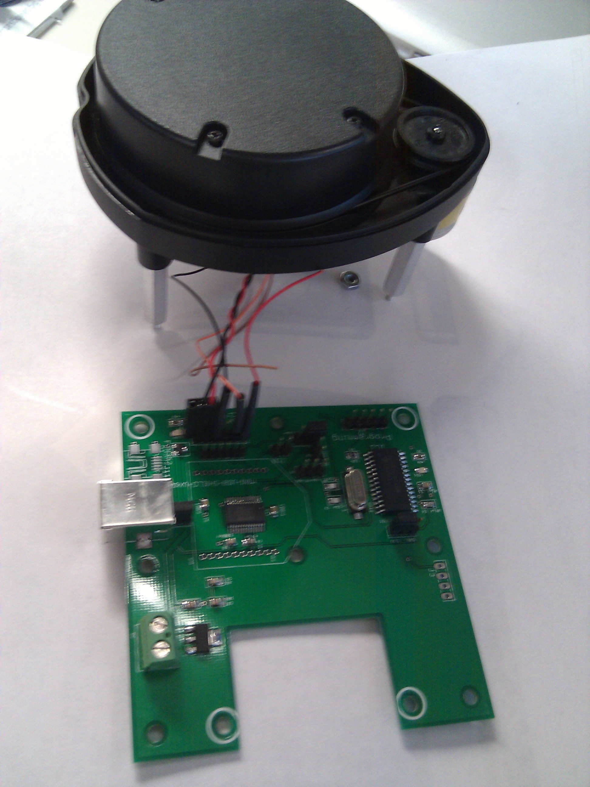

Interfacing LIDAR sensor to other Devices #lidarxv11interface
I created a board to interface the LIDAR sensor to a PC without the rest of the XV-11. The PCB consists of a PIC18F2221, and FTDI-232R, a 3.3V regulator, and a Fet for controlling the motor. The pic watches the data from the LIDAR and uses the speed information to control the PWM pin attached to the FET. In this way the correct speed can be maintained. The Firmware for the pic currently only supports the old LIDAR firmware ( that is what I have). Hopefully someone else can modify it to work with the other firmware as well. There are jumpers for configuring who talks to what between the PC, PIC, and LIDAR. There are also options for supplying your own 5V instead of getting it from USB and an option for using an XBEE for wireless communication. Schematics are posted below as well as the Eagle brd files. Source code for the PIC will be posted soon. I have spare boards for sale if anyone is interested. Ringo (dot) Davis (at) gmail (dot) com
xv11_lidar_controller_V1.0_schematic.pdf
xv11_lidar_controllerV1.0 brd-sch.zip
Additional Board Interfaces
XV Lidar Controller by GetSurreal

Viewing Data over USB
A simple 5v USB to UART converter is all you need to view the data from your computer, raspberry pi, or any USB port.
One option can be found here on sparkfun
Some python code to interpret this data can be found here:
https://github.com/TeamCharizard/RBE2002/tree/edison/python/visualize_data